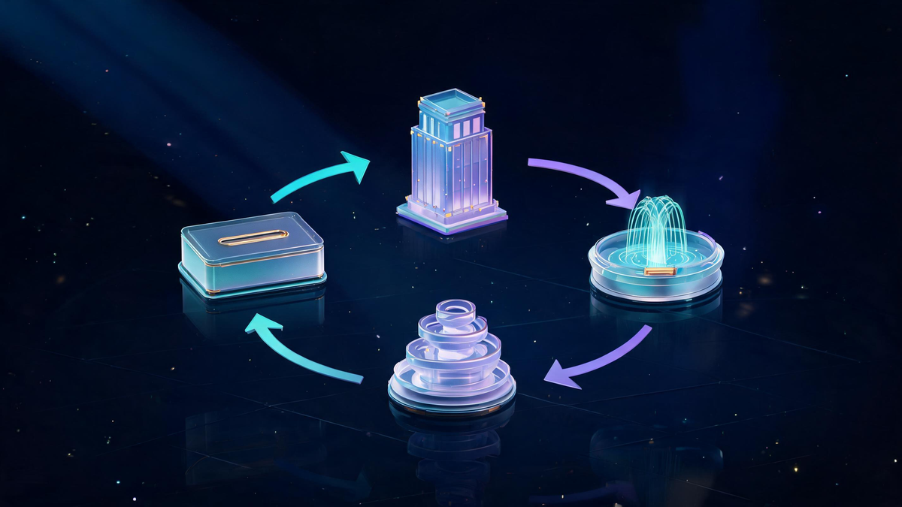
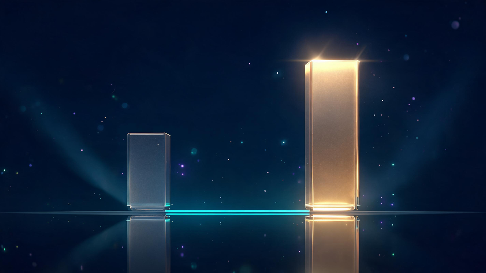
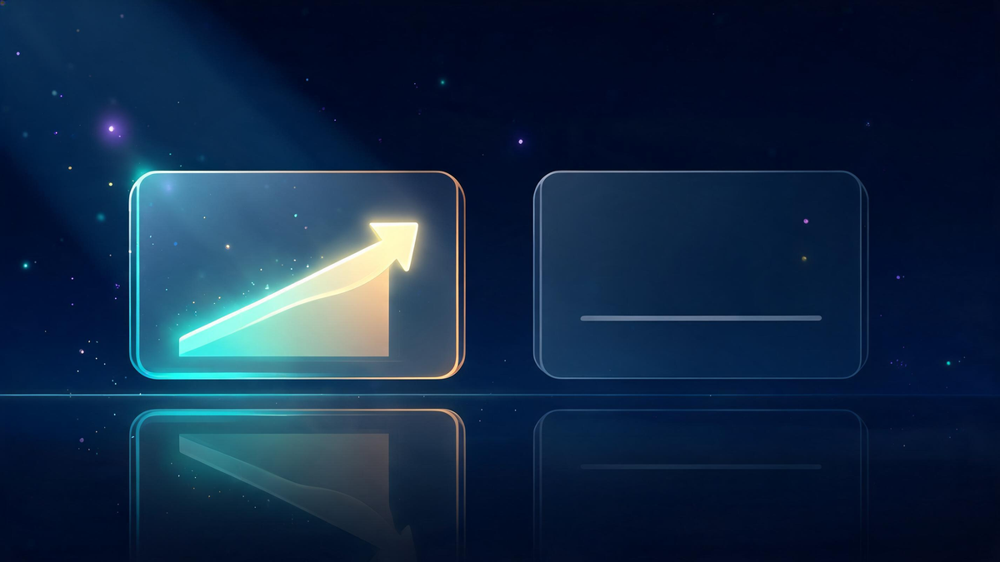

High-Yield Savings Account Explained: Rates, Risks & Worth-It Math
Quick answer
A high-yield savings account (HYSA) is an FDIC-insured savings account paying 3.10-5.00% APY as of October 2026 — roughly 10× the national savings average of 0.40-0.65%. It's worth it for emergency funds and short-term savings: same principal stability, dramatically more interest. Main trade-offs: rates float with Fed policy, interest is taxable, and headline promo rates expire. $10,000 at 4% earns about $400/year.
In this guide
Key Takeaways
- HYSAs currently pay 3.10-5.00% APY — roughly 10× the 0.40-0.65% national savings average.
- $10,000 at 4% earns ~$400/year in simple interest before taxes (vs $40-65 at average rates).
- Fully FDIC-insured up to $250,000 per depositor, per bank — same safety as any major bank account.
- Best use: emergency funds and short-term savings. Worst use: long-horizon investing money.
- Main downsides: floating rates, taxable interest, withdrawal limits, expiring promo rates.
A high-yield savings account is an FDIC-insured savings account that pays roughly 10× the national average interest — currently 3.10-5.00% APY versus 0.40-0.65% — with zero market risk. For emergency funds and short-term savings, it's the closest thing personal finance has to free money. This explainer covers how HYSAs work, the current rate picture, the real math on $10,000, and the downsides the bank ads skip.
Search interest in HYSAs has exploded alongside rate hikes — and so has confusion. Banks flood the results with product pages (the "what is" results are almost entirely bank marketing), while the actual mechanics, trade-offs and math get buried. This guide is the neutral version: how it works, what it pays, what it costs, and when it's the wrong tool.
What Is a High-Yield Savings Account?
A high-yield savings account is a regular savings account with a dramatically better interest rate, typically from online-focused banks. The account works identically to the savings account at your local branch: you deposit money, the bank pays interest, you withdraw when needed. The difference is the yield — 3.10-5.00% APY versus the 0.40-0.65% national savings average as of October 2026.
Why can online banks pay so much more? Structure. They run without branch networks and pass the savings to depositors as yield. The deposits are held by real, FDIC-member banks — the "online-only" part is the distribution model, not the safety model.

How Does a HYSA Work?
The mechanics run on a simple four-part loop:
- You deposit — money moves from checking to the HYSA (usually instantly, always free).
- The bank lends — your deposit funds loans and other bank assets at higher rates.
- Interest returns — the bank shares its lending income as your APY, paid monthly.
- Compounding kicks in — each month's interest joins the balance earning its own interest.
The loop's speed depends on one external force: the Federal Reserve. HYSA rates track Fed policy almost one-to-one — when the Fed holds or cuts, HYSA yields drift down; when it hikes, they climb. This is why financial media publishes HYSA rates daily, and why any rate you read (including here) carries an "as of" date.
HYSA Rates: The 2026 Picture
October 2026's rate landscape, from current roundup data:

- Top HYSA tier: 3.10-5.00% APY (NerdWallet's October roundup caps at 5%; Bankrate and Forbes concur on the band)
- Promotional outliers: rates like Axos's 5.00% arrive with conditions — linked checking, monthly direct deposits, or caps
- National savings average: 0.40-0.65% — what traditional accounts still pay
The "7% interest" question circulates constantly (it's a top search suggestion) — the honest answer is that standard top-tier HYSAs sit at 4-5%, and any 7% headline comes with caps and conditions that make it a marketing rate, not a portfolio strategy. Treat every quoted rate as a snapshot: the rate you sign up for is not guaranteed to be the rate you keep.
The Math: What $10,000 Actually Earns
Here's the simple annual arithmetic, using the current band:
- $10,000 at 4.00% APY = ~$400/year in simple interest before taxes (vs ~$40-65 at the national average)
- $50,000 at 4.00% APY = ~$2,000/year — the difference versus average banking crosses $1,800 annually
- Compounding bonus: monthly-padded interest earns its own interest, adding a small amount above the simple figure each year
The realistic caveat: rates float. A 4% account opened today might pay 3.5% next year if the Fed cuts. That's the price of principal stability — bonds lock rates but add market risk; savings accounts float rates but add none. Which trade suits you depends entirely on your timeline.
HYSA vs Regular Savings
Side by side, the comparison is almost unfair:

- Yield: 3.10-5.00% vs 0.40-0.65% — a 10× gap on identical balances
- Safety: identical — both FDIC-insured up to $250,000 per depositor, per bank
- Liquidity: comparable — both allow withdrawals; HYSAs sometimes cap certain transfer counts
- Access: HYSAs are online-first (no branch trips); regular savings offer branch service if you value it
The only rational reasons to keep large balances in a regular savings account: you need in-branch service weekly, or your bank's linked-account perks (fee waivers, rate bumps) outweigh the yield gap. For everyone else, the gap is the entire argument.
FDIC Insurance: The Safety Layer
The question behind every "is it safe?" search: FDIC-member banks insure deposits up to $250,000 per depositor, per bank, per ownership category — and that applies fully to HYSA accounts at member banks. Online-only providers are typically FDIC-member banks themselves or hold deposits through an partner bank; the disclosure lives in the account's own documents.
Two practical checks before opening: confirm the FDIC membership note on the provider's site (it will be displayed — it's a selling point), and if you're parking more than $250,000, spread it across banks to stay fully covered. For emergency-fund-sized balances, one account is plenty.
The Honest Downsides
Bank ads skip these; Reddit's "downsides" threads surface them. All four are real:
- Floating rates: your 4.5% can become 3.8% after Fed cuts — nothing locks
- Withdrawal rhythms: some accounts limit certain transfers or charge for excess activity
- Taxes: interest counts as ordinary income — the $400 on $10,000 is pre-tax (see below)
- Promo expirations: headline rates with caps, direct-deposit requirements, or 6-month windows
None of these flip the verdict for emergency-fund money — they're trade-offs, not traps. But they explain why HYSAs are the wrong home for long-horizon investing: locking money that markets could compound harder is the real opportunity cost.
Taxes on HYSA Interest
HYSA interest is taxable as ordinary income in the year earned — the bank issues a tax form (1099-INT) for interest above the reporting threshold, and even smaller interest is technically reportable. At today's rates that means the $400 on a $10,000 balance is pre-tax; your actual keep depends on your bracket. This is normal for all interest income — but it's the detail most rate-comparison articles skip, and the reason the effective gap versus average accounts, while still large, is slightly smaller than the headline APYs suggest.
Is a HYSA Worth It in 2026?
Google's AI answer to this exact question — and our independent read agrees — is: yes, for emergency funds and short-term savings you need within a few years. The combination of principal stability, FDIC coverage, and a 10× yield gap over average accounts makes it the default home for defensive cash.
Frequently Asked Questions
How much will $10,000 make in a high-yield savings account?
At a 4.00% APY, $10,000 earns roughly $400 per year in simple annual interest before taxes — versus about $40-65 in a traditional account at the 0.40-0.65% national average. Compounding adds a little more, and the exact figure moves with the rate you lock in.
Which bank gives 7% interest on savings accounts?
No major bank currently offers a standard 7% savings rate. Occasional promotional offers advertise high headline rates, but they carry conditions like deposit caps, direct-deposit requirements or short promotional windows. The standard top tier for high-yield savings accounts in October 2026 sits around 4-5% APY.
Is there any downside to a high-yield savings account?
The main trade-offs: rates float with Federal Reserve policy and can drop after you open the account, some accounts limit certain withdrawals, interest earned is taxable income, and promotional headline rates often expire. None are dealbreakers for an emergency fund, but they matter for long-horizon money.
How much should I keep in a high-yield savings account?
The standard guidance is 3-6 months of essential expenses as an emergency fund, plus any short-term savings you need within roughly two years. Money with a longer horizon historically belongs in invested assets, not savings accounts.
Is a high-yield savings account FDIC insured?
Yes, when the bank is FDIC-member: deposits are insured up to $250,000 per depositor, per bank, per ownership category. Online-only HYSA providers are typically FDIC-member banks or partner with one — the insurance note appears in the account's own disclosures.
What are the key differences between bonds and high-yield savings accounts?
A savings account keeps your principal perfectly stable and lets you withdraw anytime; bonds can gain or lose market value before maturity and may lock your money for years. Savings accounts suit emergency funds; bonds suit longer horizons where some price movement is acceptable.
Keep Exploring
Keep exploring Veritya Daily's personal-finance coverage: build the tracking habit with Budgeting Apps for Teens and Best Free Budgeting Apps, start investing after your fund is set in Quantum Computing ETFs, or see the broader market in our Dow Jones live page.
📚 Sources & Citations (10)
- Google AI Overview — HYSA worth-it verdict; APY ranges 3.10-5.00% vs national average 0.37-0.65% (retrieved October 15, 2026)
- YepAPI — Intent (10-keyword family), SERP (3 queries), Images SERP (2 queries) & News SERP data (October 15, 2026)
- Bankrate — Best High-Yield Savings Accounts of October 2026
- NerdWallet — Best High-Yield Savings Accounts of October 2026: Up to 5%
- Forbes — 10 Best High-Yield Savings Accounts of 2026 (Up to 4.25%)
- US News — 10 Best High-Yield Savings Accounts of October 2026
- Investopedia — High-Yield Savings Accounts guide; "Inflation Just Raised the Bar for High-Yield Savings" (October 2026)
- Britannica Money — Pros & Cons of a High-Yield Savings Account vs Traditional
- Fortune / WSJ — Daily high-yield savings rates journalism, October 15, 2026 editions
- Veritya Daily — Budgeting Apps for Teens 2026 & Best Free Budgeting Apps (companion guides)